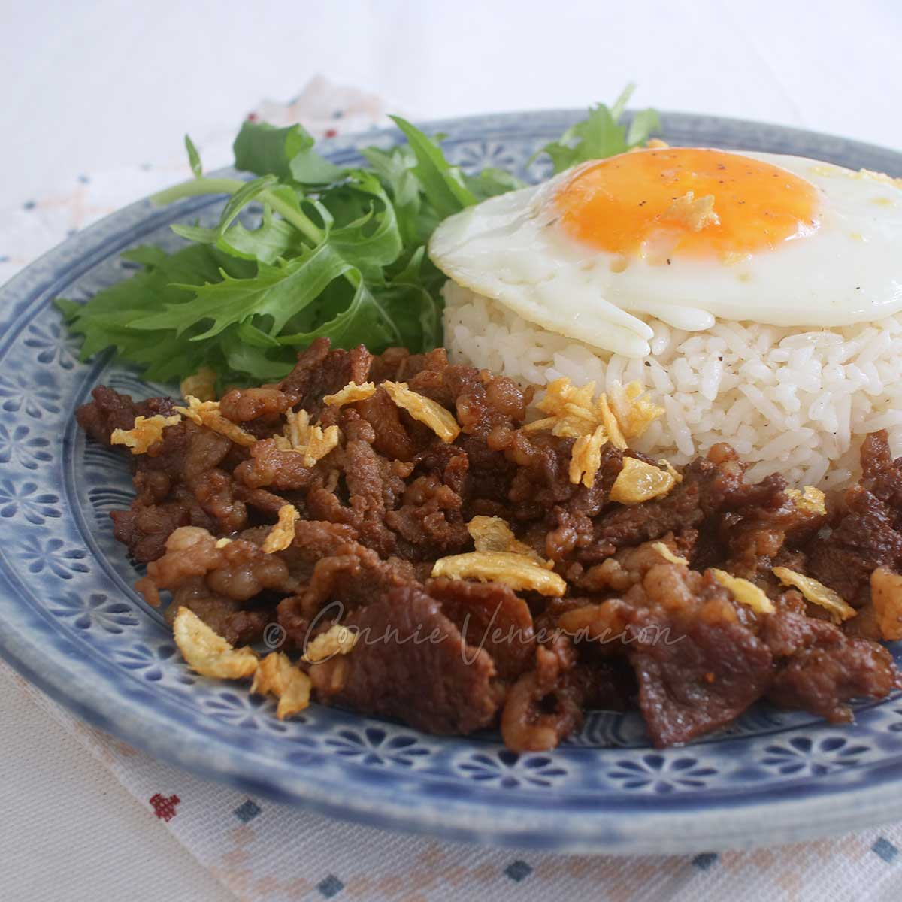

Tapsilog

Ingredients
For the prep:
- 1 lb. beef sirloin sliced thinly
- 2 pieces eggs
- 6 tablespoons cooking oil
Tapa Marinade
- 3 tablespoons liquid seasoning
- 6 cloves crushed garlic
- ¾ cups pineapple juice
- 2 tablespoons brown sugar
- ¼ teaspoon ground white pepper
Fried Rice
- 5 cups leftover rice
- 1 teaspoon salt
- 5 cloves garlic crushed
Instructions
- Prepare the tapa by placing the beef in a large bowl. Combine with all the tapa marinade ingredients. Mix well and cover the bowl. Place inside the fridge and marinate overnight.
- Cook the garlic fried rice (sinangag na kanin) by heating 3 tablespoons cooking oil in a pan. Add crushed garlic. Cook until garlic turns light brown. Add the leftover rice. Stir-fry for 3 minutes.
- Season with salt. Continue to stir-fry for 3 to 5 minutes. Set aside.
- Start to cook the tapa. Heat a pan and pour the marinated beef into it, including the marinade. Add ¾ cups water. Let the mixture boil. Cover the pan and continue to cook until the liquid reduces to half. Add 3 tablespoons cooking oil into the mixture. Continue to cook until the liquid completely evaporates. Fry the beef tapa in remaining oil until medium brown. Set aside.
- Fry the egg by pouring 1 tablespoon oil on a pan. Crack a piece of egg and sprinkle enough salt on top. Cook for 30 seconds. Pour 2 tablespoons water on the side of the pan. Cover and let the water boil. Continue to cook until the egg yolks gets completely cooked by the steam.
- Arrange the beef tapa, sinangag, and fried egg on a large plate to form Tapsilog. Serve with vinegar as dipping sauce for tapa.